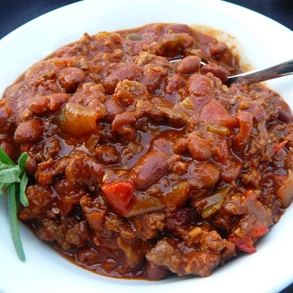

Boilermaker Chili - Halved

Ground beef and sausage chili with beans.
Ingredients
- 1 pound ground beef chuck
- 1/2 pound bulk Italian sausage
- 2 cans chili beans, 1 drained, 1 spicy sauce
- 1 (28 ounce) can diced tomatoes with juice
- 1/2 (6 ounce) can tomato paste
- 1/2 large yellow onion, chopped
- 1-1/2 stalks celery, chopped
- 1 bell pepper, seeded and chopped
- 1-1/2 teaspoons bacon bits
- 2 cubes/2 tsp beef bouillon
- 1/4 cup beer/red wine
- 2 tablespoons chili powder
- 1-1/2 teaspoons Worcestershire sauce
- 1-1/2 teaspoons minced garlic
- 1-1/2 teaspoons dried oregano
- 1 teaspoon ground cumin
- 1 teaspoon hot sauce (e.g. Tabasco)
- 1/2 teaspoon dried basil
- 1/2 teaspoon salt
- 1/2 teaspoon ground black pepper
- 1/2 teaspoon cayenne pepper
- 1/2 teaspoon paprika
- 1/2 teaspoon white sugar
Instructions
- Heat a large stock pot over medium-high heat. Crumble the ground chuck and sausage into the hot pan, and cook until evenly browned. Drain off excess grease.
- Pour in the chili beans, spicy chili beans, diced tomatoes and tomato paste.
Add the onion, celery, bell peppers, chile peppers, bacon bits, bouillon, and beer.
Season with chili powder, Worcestershire sauce, garlic, oregano, cumin, hot pepper sauce, basil, salt, pepper, cayenne, paprika, and sugar.
Stir to blend, then cover and simmer over low heat for at least 2 hours, stirring occasionally.
- After 2 hours, taste, and adjust salt, pepper, and chili powder if necessary. The longer the chili simmers, the better it will taste. Remove from heat and serve, or refrigerate, and serve the next day.